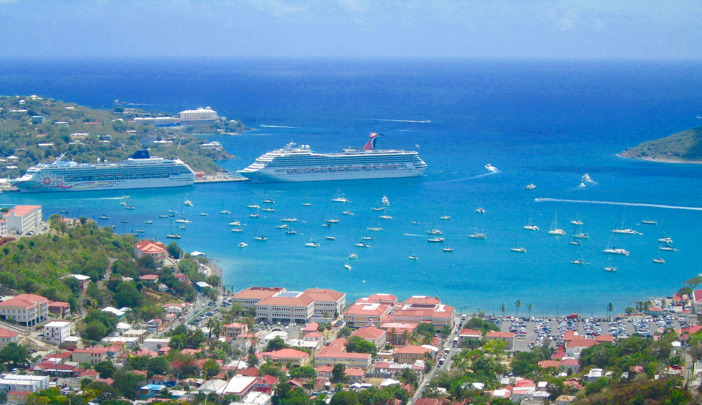

Lodging: Taniti has a wide variety of
lodging that ranges from an inexpensive hostel to one large, four-star resort. There are many small,
family-owned hotels and a growing number of bed and breakfasts. All types of lodging are strictly
regulated and regularly inspected by the Tanitian government.
Grocery Stores: Taniti has two
supermarkets, two smaller grocery stores, and one convenience store that is open 24 hours a day.
Transportation: Almost
all visitors arrive to Taniti by air, though some arrive on a small cruise ship that docks in Yellow
Leaf Bay for one night per week. Taniti is served by a small airport that can accommodate small jets and
propeller planes. Taniti is in the process of expanding the airport so larger jets will be able to land
on the island within the next few years.
Ground Transportation: Public buses serve Taniti City and run from 5 a.m. to 11 p.m. every day. Private
buses serve the rest of the island. Taxis are available in Taniti City, and rental cars can be rented
from a local rental agency near the airport. Bikes and helmets are available to rent from several
vendors (helmets are required by law). Taniti City is fairly flat and very walkable. Many tourists stay
in the area surrounding Merriton Landing: this area is easy to explore on foot.